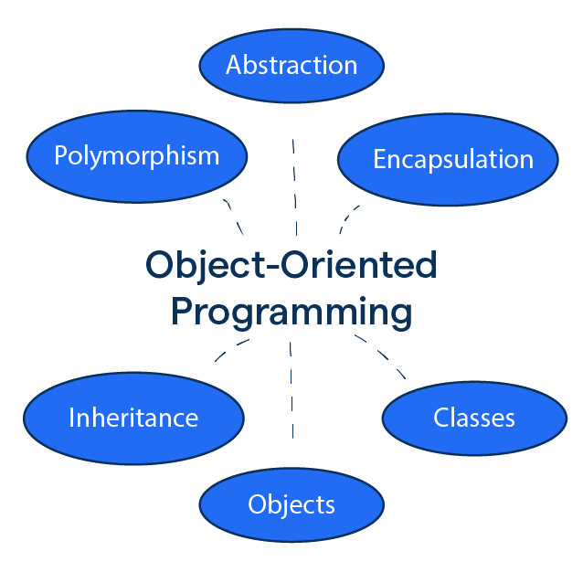

SOFTWARE DEVELOPMENT

● Data Structures & Algorithms ●
- Algorithms are step-by-step procedures for solving problems, while data structures organize and store data efficiently.
- Mastery of algorithms and data structures is essential for writing efficient and scalable code.
- Understanding algorithmic complexity helps in analyzing performance and optimizing code.
- Data structures like arrays, linked lists, trees, and hash tables are fundamental building blocks in software development.
- Proficiency in algorithms and data structures improves problem-solving skills and software design.
● Object Oriented Programming ●
- OOP is a programming paradigm based on the concept of "objects," which encapsulate data and behavior.
- It promotes modularity, code reuse, and easier maintenance through concepts like inheritance, polymorphism, and encapsulation.
- OOP fosters a more organized and intuitive way of structuring code, making it easier to manage and extend.
- Languages like Java, C++, and C# are popular choices for implementing OOP principles.
- Mastery of OOP enhances software design skills and promotes code readability and scalability.

● Software Design Pattern ●
- Design patterns are reusable solutions to common problems encountered in software design.
- They provide best practices for designing flexible and maintainable software architectures.
- Examples include Singleton, Factory, Observer, and MVC (Model-View-Controller).
- Design patterns promote code reusability, modularity, and separation of concerns.
- Understanding and applying design patterns improve software quality and facilitate code maintenance and evolution.
● Database Management System ●
- DBMS is software for managing databases, which store and retrieve data efficiently.
- Relational database management systems (RDBMS) like MySQL, PostgreSQL, and SQL Server are widely used for structured data.
- NoSQL databases like MongoDB, Cassandra, and Redis handle unstructured and semi-structured data.
- DBMS concepts like normalization, indexing, and transaction management ensure data integrity and performance.
- Proficiency in DBMS is crucial for designing scalable, secure, and efficient data storage solutions.
● Agile Software Development ●
- Agile is an iterative approach to software development that emphasizes flexibility, collaboration, and customer feedback.
- Agile methodologies like Scrum, Kanban, and XP (Extreme Programming) promote adaptive planning and continuous improvement.
- Scrum involves short, time-boxed iterations called sprints, where cross-functional teams collaborate to deliver working software.
- Agile practices like daily stand-ups, sprint planning, and retrospective meetings foster transparency and accountability.
- Adopting Agile methodologies improves team productivity, accelerates time-to-market, and enhances customer satisfaction.